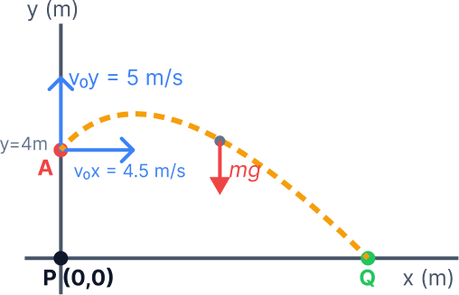
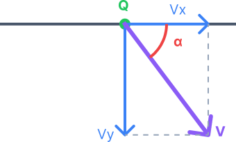

סעיף א': מציאת פונקציית המסלול וסרטוטו
א. מה נתון:
- הכדור הפורח עולה במהירות אנכית בגודל \( v_{0y} = 5 \text{ m/s} \).
- הכדור נסחף אופקית במהירות בגודל \( v_{0x} = 4.5 \text{ m/s} \).
- האבן משוחררת מנקודה A בגובה \( y_0 = 4 \text{ m} \) ומיקום התחלתי \( x_0 = 0 \text{ m} \) מעל הקרקע (נקודה P). היחידות כבר בשיטת MKS.
- התנגדות האוויר מוזנחת: משמעות הדבר היא בציר האנכי פועל כוח הכובד המקנה לאבן תאוצה \( a_y = -10 \text{ m/s}^2 \), ואילו בציר האופקי אין כוחות ולכן התאוצה היא \( a_x = 0 \).
ב. מה מחפשים:
פיתוח מתמטי של משוואת המסלול \( y(x) \) כדי להוכיח שצורת המסלול היא פרבולה, ולאחר מכן לסרטט את תרשים המסלול של האבן מרגע שחרורה בנקודה A ועד פגיעתה בקרקע בנקודה Q.
ג. נוסחאות ועקרונות בשימוש:
נשתמש בנוסחת המיקום כפונקציה של הזמן עבור תנועה שוות-תאוצה מתוך דף הנוסחאות:
ניישם נוסחה זו בנפרד עבור כל ציר, ואז נבצע "בידוד משתנים" כדי למצוא קשר ישיר בין קואורדינטת \( y \) לקואורדינטת \( x \).
ד. הצבה ופתרון:
מרגע שחרור האבן, הכוח היחיד שפועל עליה הוא כוח הכובד (נפילה חופשית), ויש לה מהירות התחלתית משולבת – גם בציר האנכי וגם בציר האופקי. מצב זה מוגדר כזריקה משופעת. מהתיאוריה הבסיסית של קינמטיקה, אנו יודעים שכל גוף הנע בזריקה משופעת יתווה מסלול צורני של פרבולה.
אבל אנחנו לא מסתפקים רק בלשנן עובדות – בואו נראה שהפיזיקה באמת מסתדרת לנו, ונוכיח שהמסלול הוא פרבולה בעזרת פיתוח המשוואות!
נבנה תחילה את משוואת התנועה עבור ציר ה-\( x \) (תנועה במהירות קבועה כי התאוצה אפסית):
כעת, נבנה את משוואת התנועה עבור ציר ה-\( y \) (נפילה חופשית עם מהירות התחלתית כלפי מעלה):
כדי למצוא את פונקציית המסלול \( y(x) \), נבודד את פרמטר הזמן \( t \) מתוך משוואת ציר ה-\( x \) ונקבל כי \( t = \frac{x}{4.5} \). נציב ביטוי זה לתוך משוואת ציר ה-\( y \):
הפונקציה שקיבלנו היא פונקציה ריבועית מהצורה הכללית \( y = c + bx + ax^2 \). כיוון שהחזקה הגבוהה ביותר של המשתנה \( x \) היא 2, והמקדם של \( x^2 \) הוא שלילי (\( -\frac{20}{81} \)), הוכחנו מתמטית שמסלול התנועה הוא פרבולה הפוכה ("בוכה"). כעת, בידיעה ודאית שזוהי פרבולה שמתחילה בעלייה (בגלל שהמהירות ההתחלתית כלפי מעלה), נסרטט את המסלול.

סעיף ב': חישוב גודל הרכיב האנכי של המהירות בפגיעה
א. מה נתון:
נתמקד אך ורק בציר האנכי (ציר \( y \)). נתוני הציר האנכי, על פי מערכת הצירים שבחרנו:
- מיקום התחלתי: \( y_0 = 4 \text{ m} \) (נקודה A).
- מיקום סופי בפגיעה בקרקע: \( y = 0 \text{ m} \) (נקודה Q).
- מהירות התחלתית בציר האנכי: \( v_{0y} = +5 \text{ m/s} \).
- תאוצה בציר האנכי (נפילה חופשית): \( a_y = -10 \text{ m/s}^2 \).
ב. מה מחפשים:
את גודל המהירות האנכית, נקרא לה \( |v_y| \), ברגע שהאבן מגיעה לקרקע (\( y=0 \)).
ג. נוסחאות בשימוש:
מתוך דף הנוסחאות, בפרק "קינמטיקה - תנועה לאורך קו ישר", נשתמש בנוסחת הקינמטיקה המקשרת בין מהירות, תאוצה והעתק (ללא זמן):
נתאים את הנוסחה לציר ה-\( y \) שלנו:
ד. הצבה ופתרון:
כעת נוציא שורש ריבועי כדי למצוא את המהירות:
מכיוון שהאבן פוגעת בקרקע כשהיא בדרכה מטה (נגד הכיוון החיובי של ציר \( y \)), המהירות שלה היא שלילית: \( v_y = -10.247 \text{ m/s} \). אולם, השאלה ביקשה את גודל הרכיב האנכי, ולכן ניקח את הערך המוחלט.
סעיף ג': חישוב זווית הפגיעה בקרקע
א. מה נתון:
מכיוון שהזנחנו את התנגדות האוויר, בציר האופקי אין שום כוח שפועל על האבן (\( \Sigma F_x = 0 \)). לפי החוק הראשון של ניוטון, המהירות בציר זה נשארת קבועה לאורך כל התנועה.
- מהירות אופקית בפגיעה: \( v_x = v_{0x} = 4.5 \text{ m/s} \).
- מהירות אנכית בפגיעה (מסעיף ב'): \( v_y = -10.247 \text{ m/s} \).
ב. מה מחפשים:
את זווית הפגיעה בקרקע, נקרא לה \( \alpha \), המוגדרת כזווית שיוצר וקטור המהירות השקול עם הכיוון האופקי בעת הפגיעה בנקודה Q.
ג. נוסחאות בשימוש:
וקטור המהירות מורכב משני רכיבים הניצבים זה לזה. על פי טריגונומטריה בסיסית במשולש ישר זווית (פירוק וקטורים):
ד. הצבה ופתרון:
נחשב קודם את היחס בעזרת הגדלים המוחלטים (כדי לקבל זווית חיובית הכלואה בין הווקטור לקרקע):
נבצע פעולת פונקציה הפוכה (\( \arctan \) או במחשבון Shift+tan):

סעיף ד': מיקום הכדור הפורח ברגע הפגיעה
א. מה נתון:
אנו צריכים למצוא את מיקום הכדור הפורח. נתון לגבי תנועת הכדור הפורח (שאינה מושפעת משחרור האבן):
- מהירות אופקית: קבועה, \( v_{xB} = 4.5 \text{ m/s} \).
- מהירות אנכית: עולה במהירות קבועה, \( v_{yB} = 5 \text{ m/s} \).
- מיקום התחלתי ב-\( t=0 \) (רגע השחרור): \( x_{0B} = 0 \), \( y_{0B} = 4 \text{ m} \).
ב. מה מחפשים:
באותו רגע \( t \) שבו האבן פוגעת בקרקע בנקודה Q, באיזה מרחק אופקי ובאיזה גובה נמצא הכדור הפורח יחסית לנקודה Q.
ג. נוסחאות בשימוש:
כדי לדעת איפה הכדור הפורח, עלינו קודם לדעת מתי האבן פגעה בקרקע. לכן נשתמש בנוסחת המהירות כפונקציה של הזמן עבור האבן:
לאחר מכן נשתמש בנוסחת המיקום כפונקציה של הזמן עבור הכדור הפורח. מכיוון שהכדור הפורח נע במהירות קבועה (תאוצה \( a=0 \)), משוואת התנועה \( x = x_0 + v_0t + \frac{1}{2}at^2 \) מצטמצמת ל:
ד. הצבה ופתרון (שלב-אחר-שלב):
שלב 1: חישוב זמן המעוף של האבן
נציב את נתוני האבן שמצאנו בסעיפים הקודמים (\( v_{0y} = 5, v_y = -10.247, a_y = -10 \)) בנוסחת הזמן:
כלומר, האבן פגעה בקרקע \( 1.525 \) שניות לאחר שחרורה.
שלב 2: מיקום האופקי של הכדור והאבן ב-\( t = 1.525 \text{ s} \)
נחשב איזה מרחק אופקי עבר הכדור הפורח בזמן הזה:
אבל רגע! גם האבן נעה אופקית באותה מהירות בדיוק (\( 4.5 \text{ m/s} \)), ולכן גם מיקום הנקודה Q הוא \( x_Q = 6.86 \text{ m} \). מכאן, המרחק האופקי ביניהם הוא אפס.
שלב 3: הגובה של הכדור הפורח ב-\( t = 1.525 \text{ s} \)
נחשב לאיזה גובה הגיע הכדור הפורח, שמתחיל מגובה \( 4 \text{ m} \) ועולה במהירות קבועה של \( 5 \text{ m/s} \):